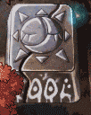

| 概要 | 情報 | アイテム一覧 |
| 敵キャラ一覧 | ステージ一覧 | 夢幻迷宮について |
| 攻略チャート | Zwei!! 攻略へ |
| ステージ選択へ |
カヤパの森 Lv.3
 |
このステージへ入る前に、こんなプレートがあります。 ここに一定時間載っていると、扉が開きます。 |
A |
A地点にあるスイッチをONにすると扉が開きます。 |
| B |
B地点には画像のような岩があります。 これは手持ちの爆弾で破壊できます。奥にはツボがあるので、忘れずに壊しましょう。 |
| C | C地点付近に見えないツボがあるらしいです。音で判断。 ピピロのファイヤーで破壊できるはずです。 |
 |
D | D地点の倒木の中にもツボがあります。 |
| E  |
E地点の、このブロックはプッシュの手袋を装備することで動かせます。 | |
| F | F地点の倒木の中にもツボがあります。 |
| G | G地点に来ると、次々とツボが降ってきます。 ツボが割れると爆弾が出てくるので、一気に駆け抜けましょう。 |
| H |
H地点のボタンスイッチの押し方は、ツボの位置がヒントです。 |
| I | I地点にはツボがいくつかあります。 一つ壊すごとに一匹敵が出てきます。全ての敵を倒すと先へ進めます。 |
| ステージ選択へ |
| 概要 | 情報 | アイテム一覧 |
| 敵キャラ一覧 | ステージ一覧 | 夢幻迷宮について |
| 攻略チャート | Zwei!! 攻略へ |
Zwei!!
| 目次へ戻る | ページの上部へ |